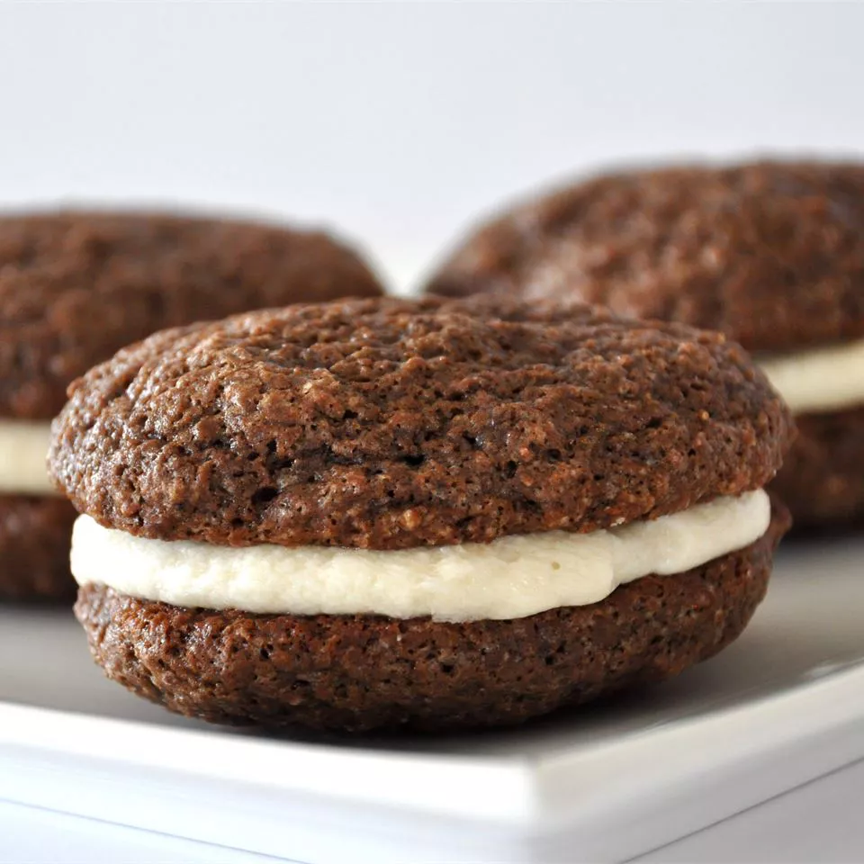

The Art of

Spellbinding
Cookie Creation
Enchanting Ingredients
- 2 cups all-purpose flour, sifted under the moonlight.
- ½ cup unsweetened cocoa powder, harvested from the Dark Forest.
- 1 ½ tsp baking soda, ground from enchanted stones.
- ½ tsp salt, gathered from the Sea of Dreams.
- 1 cup sugar, spun by the Wind Spirits.
- 1 egg, laid by the Phoenix.
- 1 cup whole milk, freshly enchanted by woodland creatures.
- ½ cup unsalted butter, softened under a gentle fire spell.
- 1 tsp vanilla extract, brewed by ancient herbalists.
- For the filling: 1 cup marshmallow fluff, enchanted from the clouds, and 1 cup butter, whipped to
perfection.
The Ritual
- Preheat your cauldron (or oven) to 350°F.
- In a large enchanted bowl, combine flour, cocoa, baking soda, and salt. Stir while chanting the
incantation of balance.
- Cream the butter and sugar in a separate bowl until light and fluffy, blending with the magic of
patience.
- Add the egg and vanilla extract to the creamed mixture, whispering the spell of unity.
- Alternate adding the flour mixture and milk, ensuring they merge into a smooth, magical batter.
- Drop spoonfuls of batter onto a parchment-lined baking sheet, casting a spell of even distribution.
- Bake for 10-12 minutes, watching as the pies rise with a soft, airy texture. Cool completely under the
protective aura of the cooling rack.
- For the filling, blend the butter and marshmallow fluff until they become a velvety potion, perfect for
bringing the pies to life.
- Spread the filling onto the flat side of one pie and sandwich with another, sealing the magic within.
- Let the Whoopie Pies rest for a few minutes before enjoying the spellbinding creation.